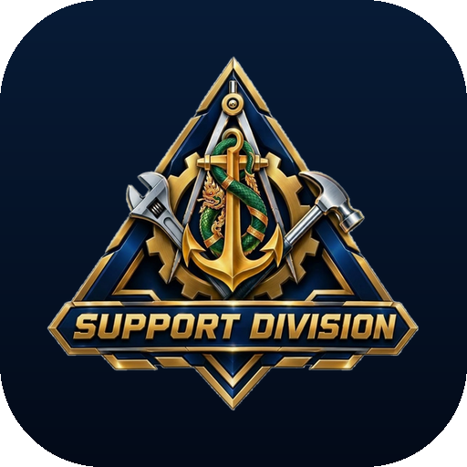

SUPPORT DIVISION
กองสนับสนุน กรมแพทย์ทหารเรือ
ระบบบริการงานสนับสนุน
📝ยื่นคำร้อง / ติดตามสถานะสำหรับหน่วยผู้ขอรับการสนับสนุน
🔐สำหรับเจ้าหน้าที่ระบบบริหารงานซ่อมบำรุง (ชื่อ + PIN)
เพิ่มไอคอนไว้บนหน้าจอหลัก: iPhone กดปุ่มแชร์ → "เพิ่มไปยังหน้าจอโฮม" · Android กดเมนู ⋮ → "เพิ่มลงในหน้าจอหลัก"